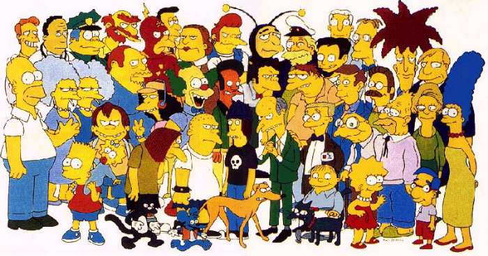

Chris's Home Page
This page is under some serious construction...
Though I am not all together certain why I am engaging in the process of creating this page,
I am certain that I have devoted much more time to this endeavor than any time it may, someday,
return. Perhaps this can operate as a useful axiom for the use of many technologies
we utilize in our daily lives in this era. Whatever the outcome, I have found the process
enjoyable, and hope that you may find joy, utility, or a chuckle in my modest offering to the
cybernetic world of organized electric pulses and flows.
Professional Goals
- to teach at the collegiate level;
- to pursue a respected scholarship in academia;
- to build upon the knowledge forged by those before me toward a wiser, more appropriate
use of our world;
- to expand my interest in and entertain my curiosity of science.
Research Interests
- freshwater and terrestrial ecology
- examining ecosystem function as a tool for restoration and resource management
- simulating ecosystems using computer-aided modeling
- restoration of degraded landscapes, especially wetlands and riparian habitats
- energy processing and nutrient cycling
Links I like to use
